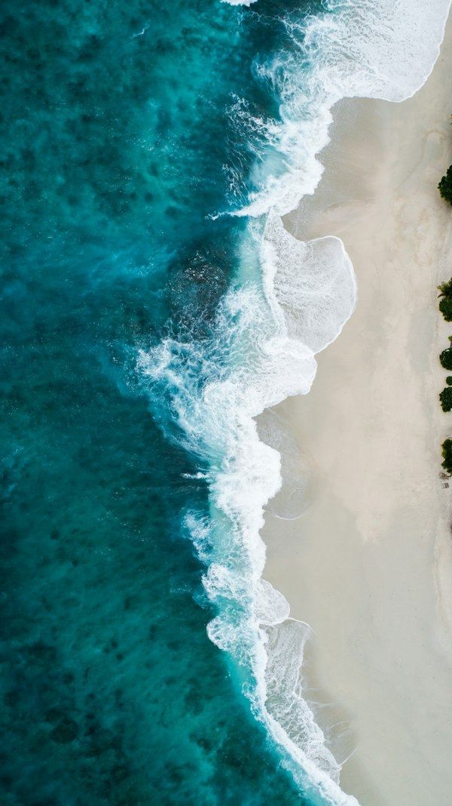
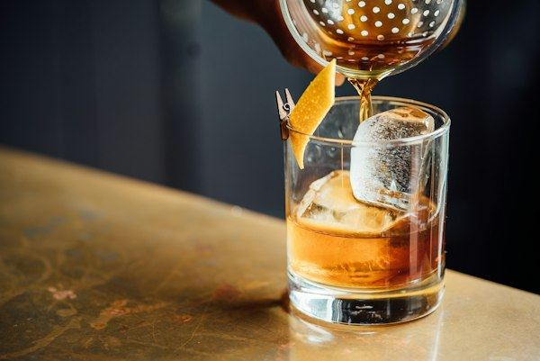
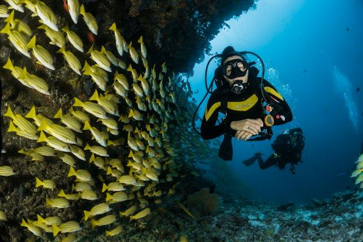
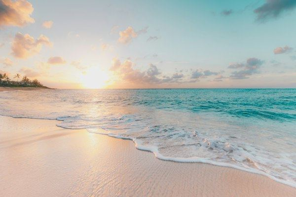
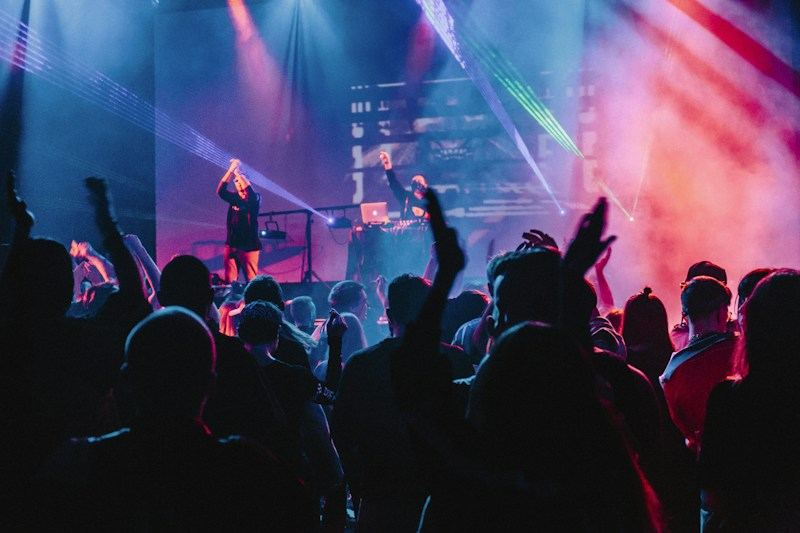
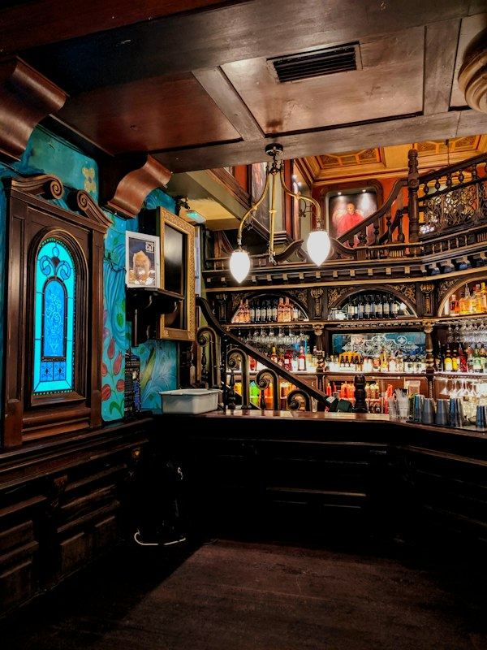

Roteiros Sob Medida
Roteiros sob medida para seus desejos e estilo de vida. Cada detalhe planejado com precisão.
O Toca Concierge conecta hóspedes de alto padrão a experiências únicas, onde você estiver. Da hospedagem e equipe na casa até roteiros exclusivos, festas privativas e acesso aos melhores lugares de cada destino.
Experiências únicas, meticulosamente desenhadas para você. Mergulhamos no seu perfil, desejos e momento de vida para tecer uma narrativa completa. Do primeiro dia ao último, fluida, autêntica e inesquecível.

Roteiros sob medida para seus desejos e estilo de vida. Cada detalhe planejado com precisão.

Acesso a restaurantes exclusivos e experiências culinárias memoráveis, da farm table ao chef estrelado.

Ingressos e acesso privilegiado aos eventos mais disputados: festivais, regatas e celebrações privadas.

Casas e villas de alto padrão com equipe dedicada: chefs, camareiras, barman e muito mais.
Exemplos ilustrativos de como a curadoria funciona. Lista real de parceiros em elaboração.

Espreguiçadeiras de linho à beira-mar, cozinha mediterrânea e DJ ao pôr-do-sol.

Carta de cachaças artesanais, ostras frescas e o melhor pôr-do-sol da vila.
Enseada protegida, água cristalina e quiosques discretos. Acesso por trilha de 8 min.
House e techno em galpão restaurado. Line-up internacional aos sábados.

Estrutura sobre as dunas, piscina infinita e cardápio nikkei. Family friendly até 18h.
Cave subterrânea, tábuas de charcutaria e seleção de orgânicos brasileiros.

Coqueiros inclinados sobre a areia. A maré de tarde transforma o cenário.
Bar escondido com porta sem placa. Coquetelaria premiada, jazz quarta a sábado.

Palhoça sobre a areia, frutos do mar direto do barco e caipirinhas artesanais.

Vista 360° do litoral, drinks tropicais e petiscos da culinária local.
Extensa faixa de areia branca, ótima para stand-up paddle e pesca artesanal.
Eletrônica beira-mar, terraço com vista para as ondas e lista Toca sem fila.
Três frentes simples, executadas com obsessão pelo detalhe.
Briefing pré-chegada com perguntas-chave: ritmo, gostos, restrições, datas. Devolvemos um plano em 48 horas.
Lista de hóspedes em casas com fila, mesas em horários disputados, ingressos para festivais e regatas sem ligações.
Um anfitrião à distância de uma mensagem do início ao fim da estadia. Mudou o vento? Reorganizamos o dia.
Duas frentes da curadoria Toca: imóveis selecionados para temporada e experiências privadas sob medida, em qualquer destino do Brasil.
Mansão triplex com elevador, em condomínio fechado na Joatinga, com praia privativa (Praia da Joatinga) e vista ao mar de todos os ambientes.
Mansão com estrutura completa de bem-estar, no mesmo condomínio fechado da Joatinga, com praia privativa e vista ao mar.
Casa em condomínio fechado na Barra da Tijuca, com piscina espelho d'água e estrutura completa de lazer.
Casa mobiliada e equipada no Joá, com vista panorâmica, suporte de concierge e segurança 24h. Indicada para grupos e celebrações com horário de silêncio a partir das 22h.
Mansão em condomínio privado fechado com segurança 24h, em São Conrado, na região da Joatinga, cercada por Mata Atlântica e a poucos minutos da cidade.
Apartamento amplo entre Copacabana e Ipanema, a cerca de 5 min a pé de Copacabana e 10 min de Ipanema e Arpoador.
Casa de alto padrão na Praia dos Amores, Rua Plínio Salgado, 32, região de Balneário Camboriú, com estrutura completa para grupos grandes.
Cinco horas de navegação privativa com saída e retorno pela Marina da Glória, passando por marcos históricos e paradas para banho de mar.

A primeira: que cada destino tem mais a oferecer do que cabe em qualquer guia. A segunda: que cada hóspede tem um ritmo próprio e merece um plano que o respeite.
Não somos uma agência. Não vendemos pacotes. Somos a pessoa que conhece o dono do bar e sabe a previsão das ondas para amanhã.
Tony Monteiro é empreendedor e DJ carioca, com mais de 10 anos criando experiências personalizadas para seus clientes e uma bagagem internacional de mais de 30 países visitados. Essa vivência trouxe um novo padrão de curadoria de luxo para o Brasil.
Estamos reunindo os primeiros depoimentos verificados de hóspedes atendidos pelo Toca Concierge.
Recomendamos pelo menos 5 dias antes da chegada para garantir todas as reservas. Para grupos grandes ou períodos de alta temporada, 2 a 3 semanas é o ideal.
Sim. Temos experiência com grupos de 2 a 40 pessoas. Para grupos acima de 15, montamos um plano operacional dedicado com coordenador presente.
Trabalhamos com uma curadoria de casas selecionadas em cada destino. Podemos indicar e intermediar a reserva da propriedade ideal para o seu perfil.
Atendemos em todo o Brasil. Montamos o plano e a curadoria local para o destino da sua viagem ou evento, onde quer que seja.
Sim, é uma das nossas especialidades. Temos fornecedores exclusivos para som, luz, catering, floricultura e toda a estrutura para eventos na praia ou em propriedades privadas.
O briefing inicial é gratuito. Após apresentarmos o plano, você aprova os itens e paga conforme o escopo definido. Aceitamos PIX, cartão e transferência internacional.
Sim. Nossa equipe atende fluentemente em português, inglês e espanhol. Temos parceiros que falam francês e italiano para grupos europeus.
Com certeza. Oferecemos desde um simples roteiro curado até o acompanhamento completo 24/7. O escopo é definido inteiramente conforme suas necessidades.
Brasileiros e estrangeiros em busca de experiências românticas, celebrações marcantes e mini-casamentos. Valorizam privacidade, estética e serviço sem burocracia.
Famílias acostumadas a viajar para destinos premium e grupos de amigos que celebram marcos de vida. Buscam conforto, segurança e experiências estruturadas do início ao fim da viagem.
Pessoas que combinam descanso com networking e estratégia. Enxergam valor em eventos bem pensados, com fluidez, pontualidade, discrição e sigilo.
Marcas de lifestyle, moda, gastronomia, finanças e outros segmentos que oferecem experiências exclusivas a clientes VIP ou times internos por meio de viagens, eventos e ativações em qualquer cidade do Brasil.
Atendemos clientes em todo o Brasil e também do exterior. No Brasil, a maior parte vem do Rio de Janeiro, onde o Toca Concierge nasceu, e de Florianópolis, além de São Paulo, Belo Horizonte, Brasília, Porto Alegre, Curitiba, Salvador, Recife e Fortaleza. No exterior, recebemos clientes da América Latina, EUA e Europa (França, Portugal, Itália, Reino Unido, Alemanha).
Conte-nos sobre o seu grupo, datas e o que normalmente o faz feliz numa viagem. Devolvemos um plano em até 48 horas sem compromisso.